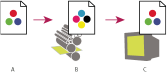

Soft-proofing colors
In a traditional publishing workflow, you print a hard proof of your document to preview how its colors will look when reproduced on a specific output device. In a color-managed workflow, you can use the precision of color profiles to soft-proof your document directly on the monitor. You can display an on‑screen preview of how your document’s colors will look when reproduced on a particular output device.
Keep in mind that the reliability of the soft proof depends upon the quality of your monitor, the profiles of your monitor and output devices, and the ambient lighting conditions of your work environment.
Note: A soft proof alone doesn’t let you preview how overprinting
will look when printed on an offset press. If you work with documents
that contain overprinting, turn on Overprint Preview to accurately
preview overprints in a soft proof.

Using a soft proof to preview the final output of a document
on your monitor
- A.
- Document in the working space
- B.
- Document’s color values are translated to color space of chosen proof profile (usually the output device’s profile).
- C.
- Monitor displays proof profile’s interpretation of document’s color values.